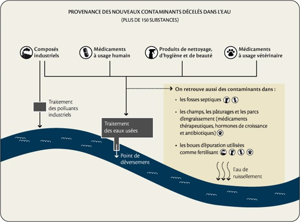

Le Debunk
Comme beaucoup de théories infondées, les complotistes utilisent les biais cognitifs pour convaincre les lecteurs.
Un biais cognitif est un phénomène qui cause des déformations et des erreurs sur le jugement d’un individu. En ayant connaissance de ces effets, on peut faire croire presque n’importe quoi à un individu non averti.
→ Savez-vous pourquoi 83% des enfants myopes dorment avec une veilleuse ?
→ Réfléchissez bien...
→ Peut-être que dormir avec une lumière n’est pas bon pour la vue. On a l’habitude de dormir dans le noir. L’obscurité repose nos yeux. Si on dort avec une lampe, on ne repose pas assez notre vue et cela peut abimer nos yeux fragiles. Mais alors dans ce cas il faut vite changer les choses pour protéger nos enfants !
En réalité, la myopie se transmet avec les gènes. Les enfants myopes dorment souvent avec une veilleuse car les parents le font eux-mêmes. Pour mieux voir le soir dans la chambre de leur bébé, ils installent une petite lumière et cela n’affecte en aucun cas la vue.
Ici, on utilise 2 biais cognitifs pour inciter à croire à cette théorie :
→ Ici, on utilise 2 biais cognitifs pour inciter à croire à cette théorie : “la lumière abime la vue donc la veilleuse cause des problèmes de vue.” La solution parait simple. En réalité, il nous manque des informations. On ne peut pas conclure aussi vite.
→ Ensuite, le biais émotionnel : “il faut absolument arrêter d’utiliser les veilleuses car cela met en danger nos enfants”. On utilise les émotions pour persuader.
Ces 2 biais sont utilisés pour vous inciter à penser que la consommation ou l’utilisation d’eau courante peut rendre un individu incapable de se reproduire. Cela touche directement nos principes car cela nous priverait de la liberté d’avoir ou non des enfants. De plus, cela serait une solution de propagande simple pour le gouvernement français afin de lutter contre la surpopulation.
Le cuivre rend-il stérile ? Oui, mais pas par voie orale et encore moins en si faible concentration !
L’un des moyens de contraception le plus reconnu par son efficacité est le stérilet au cuivre. Le cuivre a un effet neutralisant envers les spermatozoïdes. Ils n’atteignent donc jamais l’ovule et aucune fécondation ne peut avoir lieu. C’est le contact entre le cuivre et les spermatozoïdes qui produit l’efficacité des stérilets.
On retrouve des traces de cuivre dans l’eau du robinet. On peut se demander si cette pollution est susceptible d’avoir des effets sur la santé humaine ; et si le cuivre présent dans l’eau a le même effet que le stérilet.
Selon une étude de l'ANSES réalisée en 2003, la principale provenance du cuivre serait « liée à la dissolution des matériaux constitutifs des canalisations et de certaines soudures des réseaux publics et privés ». La limite légale française fixée est de 2 mg/L. Les analyses faites régulièrement sur le réseau français ne mettent que rarement des taux de cuivre supérieurs à 2mg/L.
Le cuivre est un élément essentiel au bon fonctionnement de notre corps. Il est donc nécessaire d’en ingurgiter. La principale voie d’absorption du cuivre est la voie digestive. Or, comme dit précédemment, c’est le contact direct entre le cuivre et les spermatozoïdes qui est radical. Il n’y a donc pas de risque sur la fertilité car aucun contact direct n’a lieu.
Selon l'Agence Française de Sécurité Sanitaire des Aliments, « les données toxicologiques actuellement disponibles ne sont pas suffisamment pertinentes en vue d’une estimation quantitative du risque à long terme lié à un dépassement de la limite de qualité du cuivre dans l’eau ».
Une carte interactive exposant la qualité des eaux des robinets de toute la France est disponible sur le site de l’UFC QUE CHOISIR. Elle permet à chacun de connaitre la qualité de son eau.
Traces de pilules contraceptives dans l’eau du robinet :
La pilule contraceptive est un autre moyen de contraception féminin très rependu. Elle est prescrite afin d’arrêter l’ovulation et le cycle menstruel. Cependant, les molécules présentes dans les pilules contraceptives altèrent les taux d’hormones dans le corps de la femme.
Selon l’ANSES, « les perturbateurs endocriniens sont des substances qui dérèglent le fonctionnement hormonal des organismes vivants et causent ainsi des effets néfastes sur la santé de l'Homme ou d'être vivants de l’environnement […] Les perturbateurs endocriniens peuvent interférer avec toutes les grandes fonctions des organismes vivants : croissance, reproduction, développement du fœtus, comportement, nutrition, métabolisme, système nerveux… ».
La pilule contraceptive contient des molécules qui pourrait s’apparenter à des perturbateurs endocriniens selon plusieurs spécialistes comme de médecin généraliste Joël Spiroux : « Lorsque j'ose dire que la pilule est un perturbateur endocrinien, mes consœurs et mes confrères me tombent dessus en me disant : "Tu n'as pas le droit de dire ça !" ».
La pilule contraceptive contient des molécules qui pourraient s’apparenter à des perturbateurs endocriniens selon plusieurs spécialistes comme le médecin généraliste Joël Spiroux : « Lorsque j'ose dire que la pilule est un perturbateur endocrinien, mes consœurs et mes confrères me tombent dessus en me disant : "Tu n'as pas le droit de dire ça !"».
Ce qui est sûr, c’est que ces éléments perturbateurs se retrouvent dans les urines des femmes, qui se retrouvent ensuite dans le réseau d’assainissement.
Provenance des perturbateurs endocriniens : Source
D’origine agricole, humaine ou industrielle, ces molécules sont en partie filtrées par les stations d’épuration. Une très faible concentration de perturbateurs endocriniens se retrouvent donc dans nos eaux du robinet. Ils se retrouvent dans les cours d’eau à des concentrations suffisantes pour perturber le système reproducteur de certains poissons, mais pas assez pour perturber le système reproducteur humain. Il n’y a donc pas de risque à court terme. Comme souvent, les effets à long terme sont difficilement anticipables. Il faudrait que la concentration de ces polluants augmente drastiquement pour poser un problème sanitaire. Il n’est donc pas risqué de déguster un bon verre d’eau fraiche provenant du robinet.